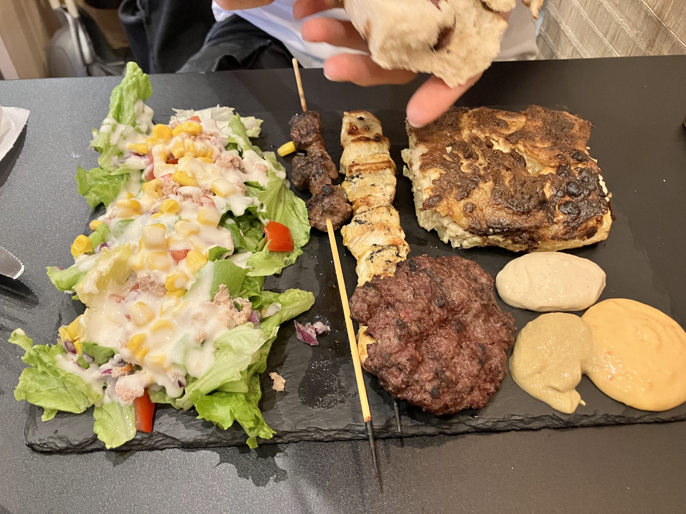
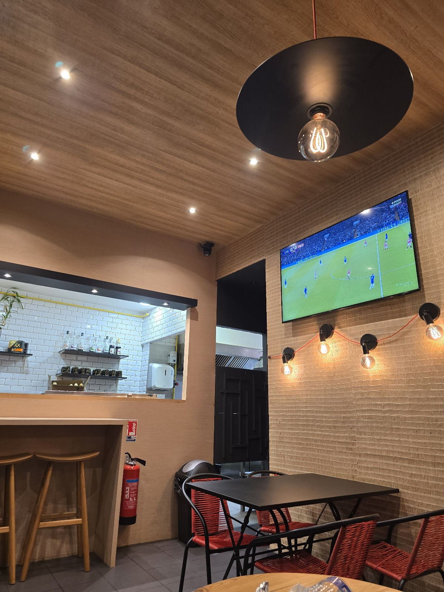
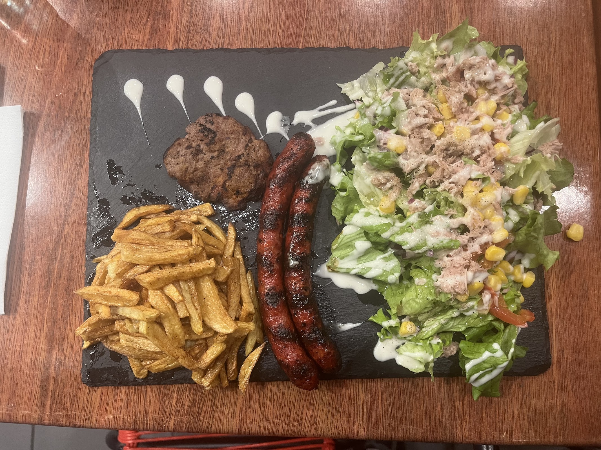
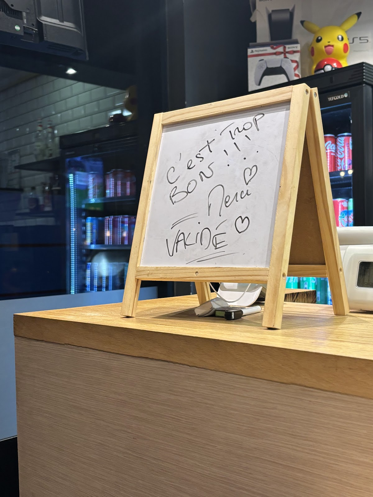
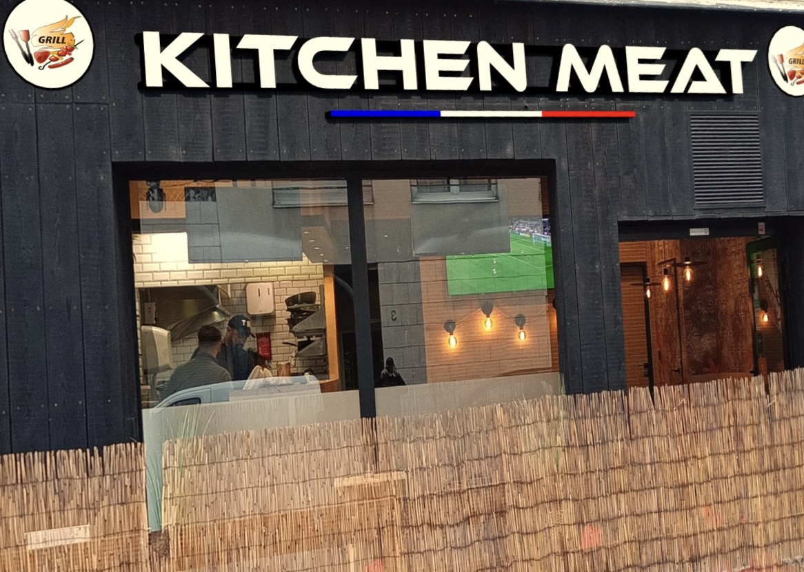

Le rapport qualité-prix
Les clients soulignent régulièrement des formules jugées généreuses et accessibles.
Restauration rapide · Lyon 3
Du grill, des portions généreuses et une carte pensée pour les grosses faims.
Sur place
Un lieu simple et chaleureux à Lyon 3, avec une cuisine qui mise sur le généreux et le réconfortant.




Ils en parlent mieux que nous
“Honestly, this is a great restaurant. Cheap, good, efficient. —— On a trouvé cet endroit super bien. Un bon prix, une bonne bouffe. « 12 balles pour me remplir le ventre, je n’aurais pas ça à McDo »”
“J'y suis allé l'autre soir sans trop savoir à quoi m'attendre et c'était très bon, bien réconfortant. Pas cher du tout. Et tout le monde était sympa, j'hésitais entre deux sauces du coup le chef m'a fait tester. Content d'avoir ce petit resto dans le quartier”
“Super adresse!! Formule (hyper rentable) Accueil (adorable, on sent la passion en cuisine) Viande (fraiche comme indiquée et en quantité) Sauces excellentes aussi (poivron oignon excellente) Moins cher et bien meilleur que plein de fast food beaucoup plus industriels. Je recommande fortement. Hâte de tester la tacos supplément gratin dauphinois 😁 Merci les chefs!”
“ATTENTION, ARNAQUE !!! 🚨 Faites très attention au menu à 10 € : si vous le prenez une fois, vous risquez de revenir encore et encore. On devient vite accro ! Un goût incroyable, un service au top et, cerise sur le gâteau, on peut patienter en jouant à la Play 5. Que demander de plus ?”
“Je suis venue dîner avec ma famille car nous ne connaissions pas bien les restaurants du quartier et celui-ci était ouvert. Mes parents étaient déjà passés un autre jour et, même s’ils ne parlent pas français, ils ont été accueillis et servis avec beaucoup de gentillesse. L’équipe a pris le temps de leur expliquer le menu et le concept du restaurant, avec beaucoup de patience, en faisant même l’effort de les comprendre avec un traducteur. Nous avons commandé des menus cheeseburger, des tacos français et un gratin, et tout était délicieux !!! Nous avons absolument tout adoré. Nous avons pris à emporter et tout était parfaitement emballé, avec soin, et même étiqueté pour bien identifier chaque plat. Je ne suis généralement pas une grande fan de hamburgers, car je les trouve souvent trop industriels et lourds, mais ceux-ci, je les ai adorés : ils sont vraiment bien assaisonnés ! Et en plus, à un très bon prix. 10/10. Est-ce qu’on vient de trouver les meilleurs burgers de Lyon ? Peut-être bien ! Je recommande à 100 %”
Infos pratiques
FAQ
Le restaurant est situé au 4 Rue Saint-Philippe, 69003 Lyon, dans le 3ᵉ arrondissement. Le bouton « Itinéraire » ouvre directement le trajet dans Google Maps.
KITCHEN MEAT est ouvert de 18:00 à 00:00 du lundi au vendredi et le dimanche. Le samedi, l'ouverture indiquée est de 18:30 à 01:00.
La carte présentée sur cette page comprend notamment des cheeseburgers, tacos, sandwichs, bols de riz, assiettes de viandes et plusieurs formules. Les tarifs sont visibles directement sur l'affiche du menu.
Le menu communiqué par l'établissement indique : « Viandes certifiées halal et fraîches chaque jour ».
Vous pouvez appeler directement le 04 26 17 28 08. Sur mobile, le bouton d'appel reste accessible en bas de l'écran.
La fiche Google Business de KITCHEN MEAT affiche une note de 4,9/5 basée sur 88 avis. Le lien « Voir sur Google » vous y conduit directement.
